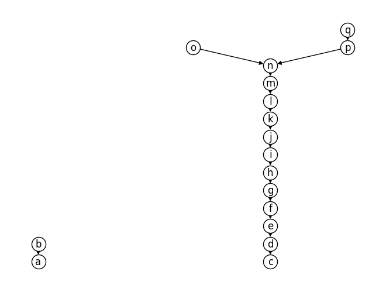

Examples with a chain and a Y-shape
[1]:
import numpy as np
from corsort import *
We study configurations of the following form: a chain of \(a\) elements, and a Y-shape with \(b\) elements on the “trunk” and \(c\) and \(d\) elements (respectively) on the “branches”. For example:
[2]:
ChainAndY(a=5, b=4, c=2, d=3).draw()
A simple example
The purpose of this example is to illustrate \(\Delta\), \(\rho\), the median height and the optimal order (to minimize the expected Spearman distance).
[3]:
poset = ChainAndY(0, 1, 3, 2)
poset.draw(with_labels=True, alpha_labels=True)
[4]:
poset.delta
[4]:
array([-5, -1, 1, 3, 0, 2])
[5]:
poset.rho
[5]:
array([Fraction(1, 7), Fraction(2, 5), Fraction(3, 5), Fraction(4, 5),
Fraction(1, 2), Fraction(3, 4)], dtype=object)
[6]:
poset.median_height
[6]:
array([0., 1., 3., 5., 2., 4.])
[7]:
print_order_as_letters(poset.order_delta)
(abecfd)
[8]:
print_order_as_letters(poset.order_rho)
(abecfd)
[9]:
print_order_as_letters(poset.order_median_height)
(abecfd)
[10]:
print_order_as_letters(poset.order_spearman_optimal)
(abecfd)
Looking for a more complex example
We are now looking for an example where the estimators \(\Delta\), \(\rho\), the median height and the optimal order all yield distinct orderings.
[27]:
def is_good_example(a, b, c, d):
poset = ChainAndY(a, b, c, d)
n_nodes = poset.n_nodes
# Non degenerate
if min(a, b, c, d) == 0:
return False
# rho
rho = poset.rho
if len(set(rho)) < n_nodes: # Tie in rho
return False
# delta
delta = poset.delta
if len(set(delta)) < n_nodes: # Tie in delta
return False
order_rho = poset.order_rho
order_delta = poset.order_delta
if np.array_equal(order_rho, order_delta): # rho and delta agree
return False
# Median height
median_height = poset.median_height
if len(set(median_height)) < n_nodes: # Tie in m
return False
order_median_height = poset.order_median_height
if np.array_equal(order_median_height, order_rho): # m and rho agree
return False
if np.array_equal(order_median_height, order_delta): # m and delta agree
return False
# Average height
# average_height = poset.average_height
# if len(set(average_height)) < n_nodes: # Tie in p
# return False
# order_average_height = poset.order_average_height
# if np.array_equal(order_average_height, order_rho): # p and rho agree
# return False
# if np.array_equal(order_average_height, order_delta): # p and delta agree
# return False
# if np.array_equal(order_average_height, order_median_height): # p and m agree
# return False
# Spearman-optimal
order_spearman_optimal = poset.order_spearman_optimal
if np.array_equal(order_spearman_optimal, order_rho): # spearman-optimal and rho agree
return False
if np.array_equal(order_spearman_optimal, order_delta): # spearman-optimal and delta agree
return False
# if np.array_equal(order_spearman_optimal, order_median_height): # spearman-optimal and m agree
# return False
# if np.array_equal(order_spearman_optimal, order_average_height): # spearman-optimal and p agree
# return False
return True
[28]:
def find_minimal_example():
n_nodes = 0
results = []
found = False
while not found:
n_nodes += 1
print(f"Testing {n_nodes=}...")
for a in range(n_nodes + 1):
for b in range(n_nodes - a + 1):
remains = n_nodes - a - b
for c in range(remains // 2 + 1):
d = n_nodes - a - b - c
# print(f"Testing {a=}, {b=}, {c=}, {d=}...")
if is_good_example(a, b, c, d):
results.append((a, b, c, d))
found = True
return results
[29]:
results = find_minimal_example()
Testing n_nodes=1...
Testing n_nodes=2...
Testing n_nodes=3...
Testing n_nodes=4...
Testing n_nodes=5...
Testing n_nodes=6...
Testing n_nodes=7...
Testing n_nodes=8...
Testing n_nodes=9...
Testing n_nodes=10...
Testing n_nodes=11...
Testing n_nodes=12...
Testing n_nodes=13...
Testing n_nodes=14...
Testing n_nodes=15...
Testing n_nodes=16...
Testing n_nodes=17...
[30]:
results
[30]:
[(2, 12, 1, 2)]
[31]:
poset = ChainAndY(*results[0])
poset.draw(with_labels=True, alpha_labels=True)

[32]:
for criterion in ['delta', 'rho', 'median_height', 'spearman_optimal']:
print(criterion)
order = getattr(poset, f'order_{criterion}')
print(order)
print_order_as_letters(order)
print(poset.spearman_score(order))
print()
delta
[ 2 3 4 5 6 7 8 0 9 1 10 11 12 13 15 14 16]
(cdefghiajbklmnpoq)
16.161764705882355
rho
[ 2 3 4 5 6 0 7 8 9 10 11 1 12 13 15 14 16]
(cdefgahijklbmnpoq)
14.044117647058824
median_height
[ 2 3 4 5 0 6 7 8 9 10 11 12 1 13 15 14 16]
(cdefaghijklmbnpoq)
13.926470588235295
spearman_optimal
[ 2 3 4 5 0 6 7 8 9 10 11 12 1 13 15 14 16]
(cdefaghijklmbnpoq)
13.926470588235295
[33]:
poset.delta
[33]:
array([ -1, 1, -14, -12, -10, -8, -6, -4, -2, 0, 2, 4, 6,
8, 12, 11, 13])
[34]:
poset.rho
[34]:
array([Fraction(1, 3), Fraction(2, 3), Fraction(1, 16), Fraction(1, 8),
Fraction(3, 16), Fraction(1, 4), Fraction(5, 16), Fraction(3, 8),
Fraction(7, 16), Fraction(1, 2), Fraction(9, 16), Fraction(5, 8),
Fraction(11, 16), Fraction(3, 4), Fraction(13, 14),
Fraction(13, 15), Fraction(14, 15)], dtype=object)
[35]:
poset.median_height
[35]:
array([ 4., 12., 0., 1., 2., 3., 5., 6., 7., 8., 9., 10., 11.,
13., 15., 14., 16.])
LaTeX code
[111]:
import string
from fractions import Fraction
[112]:
self = poset
[126]:
def print_latex(self):
print(r"""
\begin{tikzpicture}[scale=.45, transform shape]
\footnotesize
\foreach \label/\desc/\anc/\x/\m/\mn in {% \m: median height (between 1 and n) ; \mn: median height normalized by n+1""")
nb_descendants = self.nb_descendants
nb_ancestors = self.nb_ancestors
median_height = self.median_height
median_height_normalized = (self.median_height + 1) / (self.n_nodes + 1)
lst = ", \n".join([
f" {string.ascii_lowercase[i]}/{nb_descendants[i]}/{nb_ancestors[i]}/{x}/{int(median_height[i] + 1)}/{median_height_normalized[i]}"
for i, x in zip(range(self.n_nodes), [-2] * self.a + [0] * self.b + [-1] * self.c + [1] * self.d)
])
print(lst)
print(r"""}
{
\pgfmathtruncatemacro{\to}{\desc + \anc}
\pgfmathtruncatemacro{\delta}{\desc - \anc}
\node[obj,inner sep=1pt,minimum size=1pt] (d\label) at (1.15*\x, 7.01+.624*13/15*\delta) {\Large\strut$\label$};
\node[right = -.5mm of d\label] {\Large$\delta$};
\node[obj,inner sep=1pt,minimum size=1pt] (r\label) at (7+1.4*\x, 13*\desc/\to) {\Large\strut$\label$};
\node[right = -.5mm of r\label] {\Large$\frac{\desc}{\to} $};
\node[obj,inner sep=1pt,minimum size=1pt] (h\label) at (14+1.6*\x, 13*\mn) {\Large\strut$\label$};
\node[right = -.5mm of h\label] {\Large $\m$};
}
\node at (0, 0) {\LARGE(a) $\Delta$ scores.};
\node at (7, 0) {\LARGE(b) $\rho$ scores.};
\node at (14, 0) {\LARGE(c) $m$ scores.};""")
labels_a = string.ascii_lowercase[0:self.a]
labels_b = string.ascii_lowercase[self.a:self.a+self.b]
labels_c = string.ascii_lowercase[self.a+self.b:self.a+self.b+self.c]
labels_d = string.ascii_lowercase[self.a+self.b+self.c:self.a+self.b+self.c+self.d]
edges = ", ".join(
[f"{x}/{y}" for x, y in zip(labels_a[:-1], labels_a[1:])]
+ [f"{x}/{y}" for x, y in zip(labels_b[:-1], labels_b[1:])]
+ [f"{labels_b[-1]}/{labels_c[0]}"]
+ [f"{x}/{y}" for x, y in zip(labels_c[:-1], labels_c[1:])]
+ [f"{labels_b[-1]}/{labels_d[0]}"]
+ [f"{x}/{y}" for x, y in zip(labels_d[:-1], labels_d[1:])]
)
print(r"\foreach \i/\j in {" + f"{edges}" + r"}{%")
print(r""" \draw[<-] (d\i) -- (d\j);
\draw[<-] (r\i) -- (r\j);
\draw[<-] (h\i) -- (h\j);
}
\end{tikzpicture}""")
[127]:
print_latex(poset)
\begin{tikzpicture}[scale=.45, transform shape]
\footnotesize
\foreach \label/\desc/\anc/\x/\m/\mn in {% \m: median height (between 1 and n) ; \mn: median height normalized by n+1
a/1/2/-2/5/0.2777777777777778,
b/2/1/-2/13/0.7222222222222222,
c/1/15/0/1/0.05555555555555555,
d/2/14/0/2/0.1111111111111111,
e/3/13/0/3/0.16666666666666666,
f/4/12/0/4/0.2222222222222222,
g/5/11/0/6/0.3333333333333333,
h/6/10/0/7/0.3888888888888889,
i/7/9/0/8/0.4444444444444444,
j/8/8/0/9/0.5,
k/9/7/0/10/0.5555555555555556,
l/10/6/0/11/0.6111111111111112,
m/11/5/0/12/0.6666666666666666,
n/12/4/0/14/0.7777777777777778,
o/13/1/-1/16/0.8888888888888888,
p/13/2/1/15/0.8333333333333334,
q/14/1/1/17/0.9444444444444444
}
{
\pgfmathtruncatemacro{\to}{\desc + \anc}
\pgfmathtruncatemacro{\delta}{\desc - \anc}
\node[obj,inner sep=1pt,minimum size=1pt] (d\label) at (1.15*\x, 7.01+.624*13/15*\delta) {\Large\strut$\label$};
\node[right = -.5mm of d\label] {\Large$\delta$};
\node[obj,inner sep=1pt,minimum size=1pt] (r\label) at (7+1.4*\x, 13*\desc/\to) {\Large\strut$\label$};
\node[right = -.5mm of r\label] {\Large$\frac{\desc}{\to} $};
\node[obj,inner sep=1pt,minimum size=1pt] (h\label) at (14+1.6*\x, 13*\mn) {\Large\strut$\label$};
\node[right = -.5mm of h\label] {\Large $\m$};
}
\node at (0, 0) {\LARGE(a) $\Delta$ scores.};
\node at (7, 0) {\LARGE(b) $\rho$ scores.};
\node at (14, 0) {\LARGE(c) $m$ scores.};
\foreach \i/\j in {a/b, c/d, d/e, e/f, f/g, g/h, h/i, i/j, j/k, k/l, l/m, m/n, n/o, n/p, p/q}{%
\draw[<-] (d\i) -- (d\j);
\draw[<-] (r\i) -- (r\j);
\draw[<-] (h\i) -- (h\j);
}
\end{tikzpicture}
[ ]: